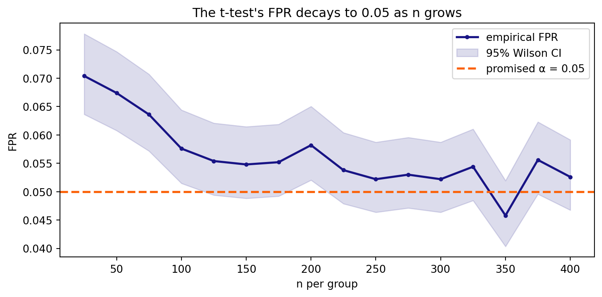

The Monte Carlo method: validating statistical criteria
Author
Affiliation
Ihor Miroshnychenko
Kyiv School of Economics
Published
June 8, 2026
What we are doing today
In the lecture we saw the core idea of the Monte Carlo method: to check any statistical criterion, you repeat the same experiment with a known answer many times and count how often the criterion is wrong. That is how we answered three questions: is the criterion correct?, which criterion is better?, from what sample size can we trust the \(t\)-test?
Today we assemble this into a single tool — our own simulate_rejections() function, which we grow step by step (FPR → confidence interval → two samples → power), and at the end we build its “historical twin” thousand_aa_tests() to validate on real logs.
NoteGround rules
The tool we build today is the Monte Carlo validator, not the \(t\)-test itself. The criterion (the thing we are testing) is taken ready-made: scipy.stats.ttest_ind — or your own my_two_sample_t_test from Practice 4.
Each version is a small extension of the previous one.
Every final step reuses earlier functions rather than duplicating them.
After each version there is a “Your turn” mini-task.
We always generate \(H_0\)/\(H_1\)ourselves (the “omniscient god” role): only then do we know the right answer and can count the errors.
1 Case study: can we trust the \(t\)-test on GreenBowl ARPU?
We work with the same GreenBowl delivery app as in Practice 4. The experimentation team runs many small A/B tests: separately per city and per cuisine category. In big cities the samples are large, in new ones they are small (a few dozen users per week). The metric — ARPU (revenue per user) — is heavily skewed.
Unit of observation: one user per week.
Metric: ARPU in UAH — continuous, positive, skewed (lognormal: a mass of small orders + a long right tail of “whales”).
Criterion under test: the two-sample \(t\)-test (Welch by default).
Significance level:\(\alpha = 0.05\).
ImportantQuestions Monte Carlo will answer today
Is the \(t\)-test correct on our skewed ARPU? (does it keep the promised 5% false positives or not?)
From what sample size can we trust it in small cities?
Which variant is better — Student’s or Welch — when the groups differ in size and spread?
How much power does the test have on a realistic effect — and is it enough to catch the effect of a promotion?
None of these can be honestly closed with a “textbook theorem” — only by simulating on our data.
We generate skewed ARPU exactly as in Practice 4 (a lognormal distribution with a given mean; the sigma parameter controls the spread / tail heaviness without shifting the mean):
def arpu_sample(true_mean, n, sigma=0.6):"""A lognormal ARPU sample with a given mean true_mean.""" mu = np.log(true_mean) - sigma**2/2return np.random.lognormal(mean=mu, sigma=sigma, size=n)np.random.seed(73)demo = arpu_sample(250, 3000)fig, ax = plt.subplots(figsize=(8, 4))ax.hist(demo, bins=60, color=turquoise, alpha=0.7, edgecolor="white")ax.axvline(250, color=red, lw=2, label="true mean = 250 ₴")ax.set_xlabel("User ARPU, ₴")ax.set_ylabel("Frequency")ax.set_title("ARPU distribution — right-skewed (n = 3000)")ax.legend()plt.tight_layout()plt.show()print(f"Mean = {demo.mean():.1f} ₴, median = {np.median(demo):.1f} ₴ "f"→ skewness is obvious (mean > median)")
Mean = 250.8 ₴, median = 212.6 ₴ → skewness is obvious (mean > median)
The distribution is clearly not normal. The lecture’s question: does the CLT save the \(t\)-test — and from what \(n\)? Let’s check it by simulation, not on faith.
2 Version 1 — FPR (point estimate)
The simplest check: run an A/A test (two groups from the same distribution, so \(H_0\) is guaranteed true) many times and count the fraction of cases where the criterion wrongly rejected \(H_0\). That is the FPR (false positive rate) — the rate of type I errors.
def simulate_fpr(gen, n, n_exps=10_000, alpha=0.05, seed=73):"""Version 1. Empirical FPR of the two-sample t-test under H0. gen(n) -> a sample of size n. Both groups come from gen → H0 is true. """ np.random.seed(seed) bad_cnt =0for _ inrange(n_exps): test = gen(n) # H0 is true: control = gen(n) # both groups from the same distribution pvalue = stats.ttest_ind(test, control).pvalue bad_cnt += pvalue < alphareturn bad_cnt / n_exps
Let’s check on skewed ARPU. First, a “large enough” sample (\(n = 200\) users per group):
arpu_aa =lambda n: arpu_sample(250, n) # A/A generator: mean 250fpr_200 = simulate_fpr(arpu_aa, n=200)fpr_30 = simulate_fpr(arpu_aa, n=30)print(f"FPR at n=200: {fpr_200:.4f}")print(f"FPR at n=30: {fpr_30:.4f}")
FPR at n=200: 0.0496
FPR at n=30: 0.0445
At \(n=200\) the FPR is \(\approx 0.05\) — looks great. At \(n=30\) it comes out a bit lower. But a point estimate wobbles from run to run: is this “fine” or is the criterion genuinely biased? We cannot tell yet — we need a confidence interval (Version 2).
TipYour turn 1
Run simulate_fpr with different seed values (e.g. 1, 2, 3) at a fixed \(n=200\). How much does the point estimate “jump”? This is exactly the noise we will tame with an interval.
Increase n_exps from 10,000 to 50,000 at \(n=200\). Does the estimate become more stable? Why?
Applied. In a new city only \(n=15\) users per group accumulated over a week. Estimate the FPR. Is the test already “off”?
NoteSolution 1
# (1) noise of the point estimateests = [simulate_fpr(arpu_aa, 200, n_exps=10_000, seed=s) for s in (1, 2, 3)]print(f"FPR across seeds: {[f'{e:.4f}'for e in ests]} "f"→ spread ≈ {max(ests)-min(ests):.4f}")# (2) more experiments → a more stable estimateprint(f"n_exps=10k: {simulate_fpr(arpu_aa, 200, n_exps=10_000):.4f}")print(f"n_exps=50k: {simulate_fpr(arpu_aa, 200, n_exps=50_000):.4f}")# (3) a very small sampleprint(f"FPR at n=15: {simulate_fpr(arpu_aa, 15):.4f}")
FPR across seeds: ['0.0487', '0.0491', '0.0457'] → spread ≈ 0.0034
n_exps=10k: 0.0496
n_exps=50k: 0.0494
FPR at n=15: 0.0465
Interpretation. The point estimate of the FPR is itself a random variable with standard error \(\sqrt{\alpha(1-\alpha)/n_{\text{exps}}}\). More experiments → narrower spread (like the SEM in Practice 4). At \(n=15\) the skewness pulls the FPR even below 5% — the test becomes conservative (it errs less often than promised). That is safe, but it costs power. We can only pin down the exact threshold with a confidence interval.
3 Version 2 — a confidence interval for the FPR
A point estimate without an interval is the trap from the lecture. An A/A outcome is a Bernoulli variable (erred / did not), so we take the ready-made Wilson interval and form an honest verdict: does \(\alpha\) lie inside?
def simulate_fpr(gen, n, n_exps=10_000, alpha=0.05, seed=73):"""Version 2. Returns a dict: FPR + 95% Wilson CI + verdict.""" np.random.seed(seed) bad_cnt =0for _ inrange(n_exps): bad_cnt += stats.ttest_ind(gen(n), gen(n)).pvalue < alpha fpr = bad_cnt / n_exps lo, hi = proportion_confint(bad_cnt, n_exps, alpha=0.05, method="wilson")if lo <= alpha <= hi: verdict ="✅ valid (α inside the CI)"elif hi < alpha: verdict ="🟡 conservative (FPR < α: safe, but less powerful)"else: verdict ="⛔ INVALID (FPR > α: type I error too large)"return {"fpr": fpr, "ci": (lo, hi), "verdict": verdict}
for n in (200, 30): r = simulate_fpr(arpu_aa, n)print(f"n={n:>3d}: FPR={r['fpr']:.4f} "f"CI=({r['ci'][0]:.4f}, {r['ci'][1]:.4f}) → {r['verdict']}")
n=200: FPR=0.0496 CI=(0.0455, 0.0540) → ✅ valid (α inside the CI)
n= 30: FPR=0.0445 CI=(0.0406, 0.0487) → 🟡 conservative (FPR < α: safe, but less powerful)
NoteWhat the verdict showed
\(n=200\):\(\alpha = 0.05\) is inside the CI → on skewed ARPU the \(t\)-test is correct as soon as the sample is of decent size. This is the CLT + Slutsky from the \(t\)-test lecture in action.
\(n=30\): the upper CI bound is below 5% → the test is conservative. It errs less often than promised — not scary (fewer false roll-outs), but the power is lower than it could be.
TipYour turn 2
Find roughly the minimum \(n\) at which the verdict for arpu_aa becomes “✅ valid” (sweep over a few values).
Increase the skewness (sigma=1.1 in the generator). How does the threshold at which the test becomes valid shift? Link this to the “sufficient \(n\)” for the CLT.
Applied. The metric “share of users who made ≥2 orders” is a Bernoulli one. Generate an A/A for it (lambda n: (np.random.rand(n) < 0.3).astype(float)) and check the \(t\)-test at \(n=30\). Is it valid?
NoteSolution 2
# (1) validity threshold for moderate skewnessprint("Moderate skewness (sigma=0.6):")for n in (30, 60, 100, 150, 200): r = simulate_fpr(arpu_aa, n)print(f" n={n:>3d}: FPR={r['fpr']:.4f} → {r['verdict']}")# (2) stronger skewness — the threshold shifts to the rightheavy_aa =lambda n: arpu_sample(250, n, sigma=1.1)print("\nStrong skewness (sigma=1.1):")for n in (100, 200, 400): r = simulate_fpr(heavy_aa, n)print(f" n={n:>3d}: FPR={r['fpr']:.4f} → {r['verdict']}")# (3) a Bernoulli metricbinom_aa =lambda n: (np.random.rand(n) <0.3).astype(float)r = simulate_fpr(binom_aa, 30)print(f"\nBernoulli p=0.3, n=30: FPR={r['fpr']:.4f} → {r['verdict']}")
Moderate skewness (sigma=0.6):
n= 30: FPR=0.0445 → 🟡 conservative (FPR < α: safe, but less powerful)
n= 60: FPR=0.0452 → 🟡 conservative (FPR < α: safe, but less powerful)
n=100: FPR=0.0444 → 🟡 conservative (FPR < α: safe, but less powerful)
n=150: FPR=0.0461 → ✅ valid (α inside the CI)
n=200: FPR=0.0496 → ✅ valid (α inside the CI)
Strong skewness (sigma=1.1):
n=100: FPR=0.0411 → 🟡 conservative (FPR < α: safe, but less powerful)
n=200: FPR=0.0484 → ✅ valid (α inside the CI)
n=400: FPR=0.0453 → 🟡 conservative (FPR < α: safe, but less powerful)
Bernoulli p=0.3, n=30: FPR=0.0504 → ✅ valid (α inside the CI)
Interpretation. The heavier the tail, the larger the \(n\) the CLT needs — strongly skewed ARPU requires noticeably more observations than moderately skewed. For a binary metric with a not-too-small \(p\), the \(t\)-test is usually valid already at modest \(n\). The lesson is universal: the “sufficient \(n\)” depends on the shape of the data, and you can only learn it by simulation.
4 Version 3 — the universal simulate_rejections
So far we generated both groups from a single generator. Reality is more complex: test and control can be of different shape, different size, and we also care about different alternative values and the Student/Welch choice. We generalize simulate_fpr into a single tool — simulate_rejections.
def simulate_rejections(test_gen, control_gen, n_test, n_control=None, n_exps=10_000, alpha=0.05, equal_var=False, alternative="two-sided", seed=73):"""A universal Monte Carlo validator. Counts the share of H0 rejections + a 95% Wilson CI. • test_gen ≡ control_gen, equal means → share = FPR • means differ (there is an effect) → share = power (TPR) equal_var=False → Welch (default); True → Student's t-test. """if n_control isNone: n_control = n_test np.random.seed(seed) rej =0for _ inrange(n_exps): test = test_gen(n_test) control = control_gen(n_control) pvalue = stats.ttest_ind(test, control, equal_var=equal_var, alternative=alternative).pvalue rej += pvalue < alpha rate = rej / n_exps lo, hi = proportion_confint(rej, n_exps, alpha=0.05, method="wilson")return {"rate": rate, "ci": (lo, hi)}
4.1 A tricky case: same mean, different shape
Now \(H_0\) is still true (both means = 250 ₴), but the groups differ in spread. Business analogy: the promotion did not change the average check, but made the test group more heterogeneous (some started ordering more, some less). In a new city both groups are small — \(n = 30\).
test_wide =lambda n: arpu_sample(250, n, sigma=0.8) # wider spreadctrl_tight =lambda n: arpu_sample(250, n, sigma=0.4) # narrower spreadr = simulate_rejections(test_wide, ctrl_tight, n_test=30)print(f"FPR = {r['rate']:.4f} CI = ({r['ci'][0]:.4f}, {r['ci'][1]:.4f})")print(f"5% inside the CI? {r['ci'][0] <=0.05<= r['ci'][1]}")
FPR = 0.0727 CI = (0.0678, 0.0780)
5% inside the CI? False
WarningThe test is not valid here
The FPR is noticeably above 5%, and \(\alpha\) is outside the CI. On small heterogeneous groups the \(t\)-test “sees an effect” more often than allowed — each such error is a false roll-out of a feature that actually did nothing. The question: from what \(n\) does it correct itself? (Version 4.)
TipYour turn 3
Make the group spreads equal (sigma=0.6 for both) at \(n=30\). Does the FPR return to 5%? That is, the problem is precisely the unequal spread at small \(n\).
Switch alternative to "greater"/"less". How does this affect the FPR in this A/A?
Applied. Imagine a “whale outlier”: mix into the test group 1% of huge orders (np.where(np.random.rand(n)<0.01, 50000, base)). What happens to the FPR?
NoteSolution 3
# (1) equal spread fixes itsame =lambda n: arpu_sample(250, n, sigma=0.6)r = simulate_rejections(same, same, n_test=30)print(f"Equal spread, n=30: FPR={r['rate']:.4f} "f"({'✅'if r['ci'][0] <=0.05<= r['ci'][1] else'⛔'})")# (2) one-sided alternativesfor alt in ("greater", "less", "two-sided"): r = simulate_rejections(test_wide, ctrl_tight, 30, alternative=alt)print(f" alt={alt:>9s}: FPR={r['rate']:.4f}")# (3) a whale outlier in the test groupdef whale(n): base = arpu_sample(250, n, sigma=0.5)return np.where(np.random.rand(n) <0.01, 50000.0, base)r = simulate_rejections(whale, lambda n: arpu_sample(250, n, sigma=0.5), n_test=200)print(f"Whale outlier in the test, n=200: FPR={r['rate']:.4f} "f"({'✅'if r['ci'][0] <=0.05<= r['ci'][1] else'⛔'})")
Interpretation. You can break the \(t\)-test at small \(n\) with unequal spread (item 1 shows: equal variances → FPR returns to 5%). The one-sided versions redistribute the error across the tails but do not remove the overall problem. A “whale outlier” is the mean’s worst enemy: a single giant at 50,000 ₴ inflates the test group’s variance and skews the FPR even at \(n=200\). In practice such whales are winsorized or you switch to robust metrics.
5 Version 4 — the minimum sample size
We have the tool — let’s use it as in the lecture: run the check for growing \(n\) and stop as soon as \(\alpha\)first lands inside the confidence interval. The function reusessimulate_rejections.
def min_sample_size(test_gen, control_gen, grid, alpha=0.05, **kw):"""Smallest n in grid for which α lies in the FPR's CI. Reuses V3."""for n in grid: r = simulate_rejections(test_gen, control_gen, n_test=n, alpha=alpha, **kw) lo, hi = r["ci"] ok = lo <= alpha <= hiprint(f" n={n:>4d}: FPR={r['rate']:.4f} "f"CI=({lo:.4f}, {hi:.4f}) {'✅'if ok else'⛔'}")if ok:return nreturnNone
For these heterogeneous ARPU groups the \(t\)-test needs about 150 users per group before it can be trusted. In big cities this is no problem; in new ones it is a signal to hold off on conclusions or aggregate the data.
Code
grid = np.arange(25, 401, 25)fprs, los, his = [], [], []for n in grid: r = simulate_rejections(test_wide, ctrl_tight, n_test=n, n_exps=5000) fprs.append(r["rate"]); los.append(r["ci"][0]); his.append(r["ci"][1])fig, ax = plt.subplots(figsize=(8, 4))ax.plot(grid, fprs, color=blue, lw=2, marker="o", ms=3, label="empirical FPR")ax.fill_between(grid, los, his, color=blue, alpha=0.15, label="95% Wilson CI")ax.axhline(0.05, color=red, ls="--", lw=2, label="promised α = 0.05")ax.set_xlabel("n per group")ax.set_ylabel("FPR")ax.set_title("The t-test's FPR decays to 0.05 as n grows")ax.legend()plt.tight_layout()plt.show()

TipYour turn 4
Run min_sample_size for equal variances (both sigma=0.6). Is the threshold much smaller?
Pass alternative="greater" into min_sample_size (via **kw). Does the threshold change for the one-sided test?
Applied. Reduce n_exps to 2000 in simulate_rejections inside the search. Why does the search then become unreliable (the CI widens)? What is the “precision ↔︎ time” trade-off?
Interpretation. With equal variances the \(t\)-test is valid already at modest \(n\) — the problem is precisely the combination of skewness and unequal spread. A smaller n_exps speeds up the search but widens the CI, and the “α inside” verdict becomes fragile: you may accidentally “declare” the test valid too early. The classic precision/time trade-off from the lecture: n_exps → ∞ gives precision but costs time.
6 Version 5 — power (TPR) and comparing criteria
The same tool measures power: you just have to generate data where the alternative is true (the test group has higher ARPU). Then rejecting \(H_0\) is a correct firing, and its share = TPR.
control =lambda n: arpu_sample(250, n) # the old menufor lift, n in [(15, 500), (15, 2000), (30, 500), (30, 2000)]: test =lambda n, L=lift: arpu_sample(250+ L, n) # effect +L ₴ r = simulate_rejections(test, control, n_test=n, alternative="greater")print(f"lift=+{lift} ₴, n={n:>4d}: power = {r['rate']:.3f} "f"CI=({r['ci'][0]:.3f}, {r['ci'][1]:.3f})")
lift=+15 ₴, n= 500: power = 0.401 CI=(0.391, 0.411)
lift=+15 ₴, n=2000: power = 0.877 CI=(0.871, 0.883)
lift=+30 ₴, n= 500: power = 0.858 CI=(0.851, 0.865)
lift=+30 ₴, n=2000: power = 1.000 CI=(1.000, 1.000)
NoteHow to read the table
Power grows both with the effect size and with the sample size. A small effect (+15 ₴) at \(n=500\) is caught only in ~40% of cases — insufficient (the gold standard is 80%); so either a larger \(n\), or wait for a larger effect. This is the same \(n \leftrightarrow\) MDE relationship as in Practice 4, but now measured by simulation, without formulas.
6.1 Which criterion is better: Student’s or Welch?
We know both from Practice 4. In the lecture we saw that they are not interchangeable. A realistic A/B: the feature was rolled out to 20% of users, so the test group is smaller; and it is also more heterogeneous (the promotion added spread). \(H_0\) is true (equal means).
With unequal group sizes and unequal variances Student’s test inflates the FPR by 2–3× (here ~13% instead of 5%) — it underestimates the standard error and yields false positives. Welch keeps it at ~5%. That is exactly why equal_var=False was the default in Practice 4. Monte Carlo visibly proved what we took on faith.
TipYour turn 5
Make the groups equal (\(n=500\) each), keeping the unequal spread. Does Welch’s advantage disappear? (hint from Practice 4: with equal \(n\) the difference is small).
Measure the power of Student’s and Welch on a +20 ₴ effect at the same 200/800. Does Welch pay for its correctness with a noticeable loss of power?
Applied. The team wants to “catch +15 ₴ with power ≥ 0.8” on equal groups. Sweep \(n \in \{1000, 2000, 4000\}\) and find a sufficient one.
NoteSolution 5
# (1) equal groups — Welch's advantage disappearss = simulate_rejections(test_small, ctrl_big, 500, 500, equal_var=True)["rate"]w = simulate_rejections(test_small, ctrl_big, 500, 500, equal_var=False)["rate"]print(f"Equal n=500: Student={s:.4f} Welch={w:.4f} → almost identical")# (2) power — the price of correctnesstest20 =lambda n: arpu_sample(270, n, sigma=0.6)ps = simulate_rejections(test20, ctrl_big, 200, 800, equal_var=True, alternative="greater")["rate"]pw = simulate_rejections(test20, ctrl_big, 200, 800, equal_var=False, alternative="greater")["rate"]print(f"Power(+20 ₴): Student={ps:.3f} Welch={pw:.3f} "f"(but Student is INVALID here → its power is misleading)")# (3) how much is needed for +15 ₴control =lambda n: arpu_sample(250, n)print("\nSearching n for power≥0.8 on +15 ₴ (equal groups):")for n in (1000, 2000, 4000): test15 =lambda n: arpu_sample(265, n) p = simulate_rejections(test15, control, n_test=n, alternative="greater")["rate"]print(f" n={n:>4d}: power={p:.3f}{'✅'if p>=0.8else''}")
Equal n=500: Student=0.0497 Welch=0.0495 → almost identical
Power(+20 ₴): Student=0.615 Welch=0.445 (but Student is INVALID here → its power is misleading)
Searching n for power≥0.8 on +15 ₴ (equal groups):
n=1000: power=0.631
n=2000: power=0.877 ✅
n=4000: power=0.990 ✅
Interpretation. With equal groups Student’s and Welch almost coincide — the trouble is only with unequal \(n\). You can compare power only among valid criteria: Student’s higher “power” is a consequence of its inflated FPR, not a real advantage. For +15 ₴ with power ≥ 0.8 on equal groups you need several thousand users per group — a small effect is expensive (just like the MDE trade-off in Practice 4).
7 Final — validation on historical data (1000 A/A)
Synthetic generators are convenient, but “what if my real data are different?”. The lecture’s answer: the thousand A/A tests method. Take historical logs, slice them (city × cuisine), and on each slice run an A/A: randomly split the users in half (no treatment → \(H_0\) is true) and run the criterion. The share of firings across all slices = the FPR on real data.
Code
# Simulate a "historical" ARPU log: 50 cities × 8 cuisines = 400 slicesnp.random.seed(2026) # reproducibility: arpu_sample uses the global RNGrng = np.random.default_rng(2026)cities = [f"city_{i}"for i inrange(50)]cuisines = ["pizza", "sushi", "burger", "vegan", "asian", "bbq", "dessert", "salad"]rows = []for city in cities: base = rng.uniform(150, 400) # its own average ARPUfor cuisine in cuisines: n = rng.integers(150, 500) sig = rng.uniform(0.5, 0.9) # its own skewness arpu = arpu_sample(base, n, sigma=sig) rows.append(pd.DataFrame({"city": city, "cuisine": cuisine, "arpu": arpu}))log = pd.concat(rows, ignore_index=True)print(f"users: {len(log):,} slices (datasets): "f"{log.groupby(['city','cuisine']).ngroups}")
users: 127,228 slices (datasets): 400
def thousand_aa_tests(log, alpha=0.05, lift=0.0, equal_var=False, seed=1):"""A thousand A/A (or A/B) tests on historical slices. Reuses ttest_ind. lift=0 → A/A → share = FPR on real data. lift>0 → A/B with a simulated effect → share = power. Split the users in each slice INDEPENDENTLY (otherwise tests are dependent). """ rng, rej, k = np.random.default_rng(seed), 0, 0for _, g in log.groupby(["city", "cuisine"]): arpu = g["arpu"].to_numpy() idx = rng.permutation(len(arpu)) # independent split half =len(arpu) //2 control = arpu[idx[:half]] test = arpu[idx[half:2* half]] * (1+ lift) rej += stats.ttest_ind(test, control, equal_var=equal_var).pvalue < alpha k +=1 lo, hi = proportion_confint(rej, k, alpha=0.05, method="wilson")return {"rate": rej / k, "ci": (lo, hi), "k": k}
aa = thousand_aa_tests(log)print(f"A/A FPR over {aa['k']} slices: {aa['rate']:.4f} "f"CI=({aa['ci'][0]:.4f}, {aa['ci'][1]:.4f}) "f"→ {'✅ valid'if aa['ci'][0] <=0.05<= aa['ci'][1] else'⛔'}")print("\nPower on a simulated effect (lift as % of ARPU):")for lift in (0.03, 0.05, 0.10): r = thousand_aa_tests(log, lift=lift)print(f" lift=+{lift:.0%}: power = {r['rate']:.3f} "f"CI=({r['ci'][0]:.3f}, {r['ci'][1]:.3f})")
A/A FPR over 400 slices: 0.0500 CI=(0.0326, 0.0760) → ✅ valid
Power on a simulated effect (lift as % of ARPU):
lift=+3%: power = 0.080 CI=(0.057, 0.111)
lift=+5%: power = 0.102 CI=(0.076, 0.136)
lift=+10%: power = 0.203 CI=(0.166, 0.245)
ImportantWhy this is more convincing than synthetic data
On the slices we have the real GreenBowl ARPU distribution, with all its real whales and skewness. \(\alpha = 0.05\) is inside the CI → the A/A infrastructure can be trusted. For power there is no effect, so we simulated it (multiply the test by \(1+\text{lift}\)): the exact size is not critical, especially when comparing two criteria. The CI is wider than on synthetic data because there are only 400 slices — more logs would give a tighter estimate.
TipYour turn 6
Compare Student’s (equal_var=True) and Welch on the historical slices. The split here is 50/50 (equal groups) — is the difference noticeable?
Add a third slicing dimension — the month (add a random month to the log). How many slices are there now and how does this affect the CI width?
Applied. One slice = one A/A. Show that a single A/A test proves nothing: take any slice and compute its FPR over 2000 repeated splits. Why does only the collection of slices give a conclusion?
NoteSolution 6
# (1) Student vs Welch on equal 50/50 slicesst = thousand_aa_tests(log, equal_var=True)["rate"]we = thousand_aa_tests(log, equal_var=False)["rate"]print(f"Historical slices (50/50): Student={st:.4f} Welch={we:.4f} → close")# (3) a single slice proves nothingone = log.groupby(["city", "cuisine"]).get_group(("city_0", "pizza"))["arpu"].to_numpy()rng = np.random.default_rng(0); rej =0for _ inrange(2000): idx = rng.permutation(len(one)); h =len(one) //2 rej += stats.ttest_ind(one[idx[h:2*h]], one[idx[:h]], equal_var=False).pvalue <0.05print(f"FPR on a SINGLE slice (2000 splits): {rej/2000:.4f} "f"— an estimate from one slice, with wide noise")
Historical slices (50/50): Student=0.0500 Welch=0.0500 → close
FPR on a SINGLE slice (2000 splits): 0.0520 — an estimate from one slice, with wide noise
Interpretation. On equal 50/50 slices Student’s and Welch almost coincide (unequal \(n\) is the main trigger of divergence). A single A/A test gives just one “yes/no” and says nothing about the FPR — you need a thousand slices to estimate the error rate precisely (which is why the method is called “a thousand A/A”). Adding a “month” dimension multiplies the number of slices and narrows the CI — more independent experiments = a more precise estimate.
8 Interpretation traps
WarningA point estimate without a CI
FPR \(= 0.047\) does not yet mean “valid”, nor does \(0.053\) mean “broken”. Always check whether \(\alpha\) is inside the confidence interval. Without the interval you are reading noise.
WarningLarge \(n\) saves you, not “data normalization”
The \(t\)-test on skewed ARPU becomes correct thanks to the CLT + Slutsky — only at a sufficient \(n\). On small heterogeneous groups any variant errs; there you need more data, winsorization of whales, or robust metrics.
ImportantThe default is Welch
With unequal group sizes/variances Student’s test inflates the FPR. equal_var=False (Welch) is the safe default. Pooled Student’s — only when there are strong grounds to believe the variances are equal.
ImportantPower is compared only among VALID criteria
The “higher power” of a broken criterion is an illusion: it simply rejects \(H_0\) more often, including falsely. First check the FPR, and only then compare the TPR.
WarningA single A/A test proves nothing
One run gives one “yes/no”. The infrastructure’s correctness is shown only by the collection (≈1000) of independent A/A tests. And the users must be split independently in each — otherwise the tests become dependent.
WarningSimulate a realistic effect
Power depends on which effect you assume. Take an effect similar to the one you expect in practice (or compare criteria — then the exact effect size matters less).
Criterion-validation checklist
If even one answer is “no” — it is too early to trust the criterion. ```